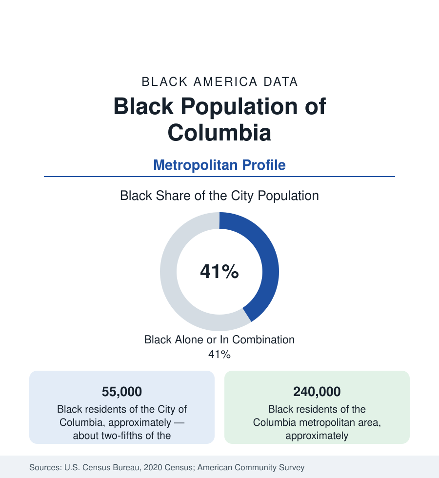

Black Cities
Black Columbia: Two HBCUs, a State House, and the Midlands' Center
Columbia holds about 55,000 Black residents in the city — two-fifths — and 240,000 across the metro. The census profile.

Columbia, South Carolina's capital, holds about 55,000 Black residents within the city — Black alone or in combination, roughly two-fifths of its 137,000 people — and about 240,000 across the metropolitan area, the Midlands' Black center. The profile's anchors are institutional: two HBCUs (Benedict College and Allen University) facing the State House across the city's heart, the flagship university, and Fort Jackson, the Army's largest basic-training post — a capital, college, and garrison town in the middle of the Corridor of Shame's western end.
Waverly, Elmwood, and the College District
Black Columbia's historic geography centers on Waverly — the city's first suburb, a Black professional district from the early twentieth century (its Good Samaritan-Waverly Hospital served the community through the segregated era) — and the Harden Street and Two Notch Road corridors. Benedict (founded 1870) and Allen (founded 1870 in Paynesville, moved to Columbia) stand a mile apart in the city's east-center, an HBCU pair unique at this scale: together they enrolled generations of the state's Black teachers, ministers, and officials, and their campuses frame the community's civic geography to this day. The University of South Carolina, the flagship, enrolls the state's largest student body with a Black share that has climbed into the low teens — the desegregation generation's long arc on the campus where the State House grounds' monuments kept the argument public. The modern population distribution runs northeast: the Two Notch and Decker corridors, the Eau Claire and North Columbia districts, and Richland County's suburban northeast (Blythewood's growth corridor) hold the modern mass, with Lexington County across the river the whiter suburban shore and the airport corridor industrial.
Capital, Garrison, Campus: The Employment Triad
Columbia's Black employment runs on the state-capital pattern at full strength, triple-anchored: state government and the university system (the public-sector profile's deepest local expression), Fort Jackson (whose trainee throughput — tens of thousands of soldiers a year — plus its permanent party and civilian workforce make it the metro's economic engine, and whose retirees settle the northeast suburbs), and the hospital systems. The data show the structure's signature: Black Columbia's indicators run at the stronger end of South Carolina's metros — median income and homeownership above the state's Black averages, poverty concentrated in the older north and east districts — on the public payroll's stability, in a metro ringed by the rural counties whose indicators anchor the state profile's floor. Shaw Air Force Base at Sumter, forty minutes east, extends the military layer into the Corridor counties.
The Corridor's Western Gate
Columbia is the service and hospital center for the I-95 corridor counties of the state profile — the 'Corridor of Shame' of the education documentary — and its data carry the region's referral pattern: the corridor's patients in Columbia's hospitals, its students at Benedict, Allen, and the technical colleges, its workers commuting to the capital's payrolls. The relationship is the profile within the profile: a relatively prosperous Black capital metro functioning as the opportunity pole for the state's most disadvantaged Black rural region, an hour apart in driving time and a generation apart in the indicator tables. The state's Black political geography centers here as well — the capital's Black elected presence, the legislative Black caucus's institutional home, and the HBCU alumni networks that staff the state's Black civic life.
Change and the Estimates
The estimates show the metro's Black growth concentrated in the northeast suburbs and Blythewood's corridor, with Richland County (majority-minority in recent counts) the center of a metro diversifying at every edge. Lake Murray's shore suburbs grow whiter and richer; the older districts negotiate the university's expansion and the BullStreet redevelopment (the old state hospital campus, the city's largest current project, at the Waverly district's edge). The flood data of the past decade — the capital's catastrophic 2015 flood fell hardest on the east-side and lower-lying districts — added the resilience file to the equity ledger in the Midlands' own hand.
Reading the Columbia Numbers
Columbia is the capital-anchor profile in a hard state: two HBCUs and a garrison holding a Black middle class in place at the Corridor's gate. Its 240,000 metro residents are the Midlands' center of gravity — and the distance between their tables and the corridor counties' tables, forty miles east, is the South Carolina state profile's whole argument in one commute.
More in Black Cities
Black Atlanta: Population, Distribution, and Growth of a Black Metropolis
Metro Atlanta holds more than two million Black residents — roughly one in three, second only to New York. The suburban distribution, migration history, and composition of Black Atlanta in the census data.
Black New York: The Largest Black Population in America
The New York metropolitan area holds about 3.4 million Black residents — more than any metro in the nation — and the city itself about two million. The census profile.
Black Washington: The District and the Metro
The Washington metro holds about 1.6 million Black residents, and the District itself — long a majority-Black city — now records a Black share near 41 percent. The census profile.
Source: U.S. Census Bureau, 2020 Census; American Community Survey; Population Estimates Program.